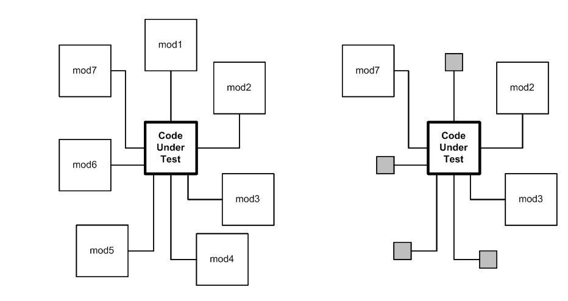

Goals
- Show you a way to test
- Remove mystery
⬇ Short-link to slides and code
Writing correct code is complicated, it's hard. How do you know when
you've gotten it right, and how do you know your code has stayed right
even after you've changed it?
The best we know to do this is with automated testing. Testing is a
large topic, with its own tools and techniques. It can be
overwhelming.
In this talk, I will show you how to write automated tests to test your
Python code. I'll start from scratch. By the time we're done here, you
should have a mystery-free view of the basics and even a few advanced
techniques, of automated testing.
I'll include some pointers off to more advanced or exotic techniques,
but you will have a good set of tools if you follow the methods shown
here.
Why test?
- Know if your code works
- Save time
- Better code
- Remove fear
- "Debugging is hard, testing is easy"
My main point here isn't to convince you to test, I hope you are reading
this because you already know you want to do it. But I have to say at
least a little bit about why you should test.
Automated testing is the best way we know to determine if your code
works. There are other techniques, like manual testing, or shipping it to
customers and waiting for complaints, but automated testing works much
better than those ways.
Although writing tests is serious effort that takes real time, in
the long run it will let you produce software faster because it makes your
development process more predictable, and you'll spend less time fighting
expensive fires.
Testing also gives you another view into your code, and will probably
help you write just plain better code. The tests force you to think about
the structure of your code, and you will find better ways to modularize
it.
Lastly, testing removes fear, because your tests are a safety net that
can tell you early when you have made a mistake and set you back on the
right path.
I AM BAD!
and I should feel bad
If you are like most developers, you know that you should be writing
tests, but you aren't, and you feel bad about it. Tests are the dental
floss of development: everyone knows they should do it more, but they
don't, and they feel guilty about it.
BTW: illustrations by my son Ben!
Yeah, it's hard
- A lot of work
- People (you) won't want to
- But: it pays off
It's true, testing is not easy. It's real engineering that takes
real thought and hard work. But it pays off in the end.
The fact is that developing software is a constant battle against chaos,
in all sorts of little ways. You carefully organize your ideas in lines of
code, but things change. You add extra lines later, and they don't quite
work as you want. New components are added to the system and your previous
assumptions are invalidated. The services you depended on shift
subtly.
You know the feeling: on a bad day, it seems like everything is out to
get you, the world is populated by gremlins and monsters, and they are all
trying to get at your code.
You have to fight that chaos, and one of your weapons is automated
tests.
OK, enough of the sermon, let's talk about how to write tests.
Roadmap
- First principles (doing it wrong)
- Test frameworks (doing it right)
- Fixtures
- ~~ Intermission ~~
- Coverage
- Test doubles
The rest of the talk is divided has these parts:
- We'll grow some tests from first principles in an ad-hoc way,
examining what's good and bad about the style of code we get,
- we'll use pytest to write tests the right way,
- we'll dive deeper into pytest's fixtures,
- and we'll talk about some more advanced topics, including coverage and test doubles.
First principles
Growing tests
We'll start with a real (if tiny) piece of code, and start testing
it. First we'll do it manually, and then grow in sophistication from there,
adding to our tests to solve problems we see along the way.
Keep in mind, the first few iterations of these tests are not the good
way to write tests. I'll let you know when we've gotten to the right
way!
Stock portfolio class
portfolio1.py
# portfolio1.py
class Portfolio:
"""A simple stock portfolio"""
def __init__(self):
# A list of lists: [[name, shares, price], ...]
self.stocks = []
def buy(self, name, shares, price):
"""Buy shares at a certain price."""
self.stocks.append([name, shares, price])
def cost(self):
"""What was the total cost of this portfolio?"""
amt = 0.0
for name, shares, price in self.stocks:
amt += shares * price
return amt
Here is our code under test, a simple stock portfolio class. It just
stores the lots of stocks purchased: each lot is a stock name, a number of
shares, and the price it was bought at. We have a method to buy a stock,
and a method that tells us the total cost of the portfolio:
# portfolio1.py
class Portfolio:
"""A simple stock portfolio"""
def __init__(self):
# A list of lists: [[name, shares, price], ...]
self.stocks = []
def buy(self, name, shares, price):
"""Buy shares at a certain price."""
self.stocks.append([name, shares, price])
def cost(self):
"""What was the total cost of this portfolio?"""
amt = 0.0
for name, shares, price in self.stocks:
amt += shares * price
return amt
First test: interactive
>>> p = Portfolio()
>>> p.cost()
0.0
>>> p.buy("IBM", 100, 176.48)
>>> p.cost()
17648.0
>>> p.buy("HPQ", 100, 36.15)
>>> p.cost()
21263.0
- Good: testing the code
- Bad: not repeatable
- Bad: labor intensive
- Bad: is it right?
For our first test, we just run it manually in a Python prompt. This is
where most programmers start with testing: play around with the code and
see if it works.
Running it like this, we can see that it's right. An empty portfolio
has a cost of zero. We buy one stock, and the cost is the price times the
shares. Then we buy another, and the cost has gone up as it should.
This is good, we're testing the code. Some developers wouldn't have
even taken this step! But it's bad because it's not repeatable. If
tomorrow we make a change to this code, it's hard to make sure that we'll
run the same tests and cover the same conditions that we did today.
It's also labor intensive: we have to type these function calls each
time we want to test the class. And how do we know the results are right?
We have to carefully examine the output, and get out a calculator, and see
that the answer is what we expect.
So we have one good quality, and three bad ones. Let's improve the
situation.
Second test: standalone
porttest1.py
# porttest1.py
from portfolio1 import Portfolio
p = Portfolio()
print(f"Empty portfolio cost: {p.cost()}")
p.buy("IBM", 100, 176.48)
print(f"With 100 IBM @ 176.48: {p.cost()}")
p.buy("HPQ", 100, 36.15)
print(f"With 100 HPQ @ 36.15: {p.cost()}")
$ python porttest1.py
Empty portfolio cost: 0.0
With 100 IBM @ 176.48: 17648.0
With 100 HPQ @ 36.15: 21263.0
- Good: testing the code
- Better: repeatable
- Better: low effort
- Bad: is it right?
Instead of typing code into a Python prompt, let's make a separate file
to hold test code. We'll do the same series of steps as before, but
they'll be recorded in our test file, and we'll print the results we
get:
# porttest1.py
from portfolio1 import Portfolio
p = Portfolio()
print(f"Empty portfolio cost: {p.cost()}")
p.buy("IBM", 100, 176.48)
print(f"With 100 IBM @ 176.48: {p.cost()}")
p.buy("HPQ", 100, 36.15)
print(f"With 100 HPQ @ 36.15: {p.cost()}")
When we run it, we get:
$ python porttest1.py
Empty portfolio cost: 0.0
With 100 IBM @ 176.48: 17648.0
With 100 HPQ @ 36.15: 21263.0
This is better because it's repeatable: we can run this test file
any time we want and have the same tests run every time. And it's low
effort: running a file is easy and quick.
But we still don't know for sure that the answers are right unless we
peer at the printed numbers and work out each time what they are supposed
to be.
Third test: expected results
porttest2.py
p = Portfolio()
print(f"Empty portfolio cost: {p.cost()}, should be 0.0")
p.buy("IBM", 100, 176.48)
print(f"With 100 IBM @ 176.48: {p.cost()}, should be 17648.0")
p.buy("HPQ", 100, 36.15)
print(f"With 100 HPQ @ 36.15: {p.cost()}, should be 21263.0")
$ python porttest2.py
Empty portfolio cost: 0.0, should be 0.0
With 100 IBM @ 176.48: 17648.0, should be 17648.0
With 100 HPQ @ 36.15: 21263.0, should be 21263.0
- Good: repeatable with low effort
- Better: explicit expected results
- Bad: have to check the results yourself
Here we've added to our test file so that in addition to printing the
result it got, it prints the result it should have gotten:
# porttest2.py
from portfolio1 import Portfolio
p = Portfolio()
print(f"Empty portfolio cost: {p.cost()}, should be 0.0")
p.buy("IBM", 100, 176.48)
print(f"With 100 IBM @ 176.48: {p.cost()}, should be 17648.0")
p.buy("HPQ", 100, 36.15)
print(f"With 100 HPQ @ 36.15: {p.cost()}, should be 21263.0")
This is better: we don't have to calculate the expected results, they
are recorded right there in the output:
$ python porttest2.py
Empty portfolio cost: 0.0, should be 0.0
With 100 IBM @ 176.48: 17648.0, should be 17648.0
With 100 HPQ @ 36.15: 21263.0, should be 21263.0
But we still have to examine all the output and compare the actual
result to the expected result. Keep in mind, the code here is very small,
so it doesn't seem like a burden. But in a real system, you might have
thousands of tests. You don't want to examine each one to see if the
result is correct.
This is still tedious work we have to do. We should get the computer to
do it for us.
Fourth test: check results automatically
porttest3.py
p = Portfolio()
print(f"Empty portfolio cost: {p.cost()}, should be 0.0")
assert p.cost() == 0.0
p.buy("IBM", 100, 176.48)
print(f"With 100 IBM @ 176.48: {p.cost()}, should be 17648.0")
assert p.cost() == 17648.0
p.buy("HPQ", 100, 36.15)
print(f"With 100 HPQ @ 36.15: {p.cost()}, should be 21263.0")
assert p.cost() == 21263.0
$ python porttest3.py
Empty portfolio cost: 0.0, should be 0.0
With 100 IBM @ 176.48: 17648.0, should be 17648.0
With 100 HPQ @ 36.15: 21263.0, should be 21263.0
- Good: repeatable with low effort
- Good: explicit expected results
- Good: results checked automatically
Here we've used the Python assert statement. You may not have run
across this before. It takes a condition, and evaluates whether it's
true or not. If it's true, then execution continues onto the next
statement. If the condition is false, it raises an AssertionError
exception.
p = Portfolio()
print(f"Empty portfolio cost: {p.cost()}, should be 0.0")
assert p.cost() == 0.0
p.buy("IBM", 100, 176.48)
print(f"With 100 IBM @ 176.48: {p.cost()}, should be 17648.0")
assert p.cost() == 17648.0
p.buy("HPQ", 100, 36.15)
print(f"With 100 HPQ @ 36.15: {p.cost()}, should be 21263.0")
assert p.cost() == 21263.0
So now we have the results checked automatically. If one of the results
is incorrect, the assert statement will raise an exception.
Assertions like these are at the heart of automated testing. You'll
see a lot of them in real tests.
Fourth test: what failure looks like
$ python porttest3_broken.py
Empty portfolio cost: 0.0, should be 0.0
With 100 IBM @ 176.48: 17648.0, should be 17600.0
Traceback (most recent call last):
File "porttest3_broken.py", line 9, in <module>
assert p.cost() == 17600.0
AssertionError
- Good: repeatable with low effort
- Good: expected results checked automatically
- OK: failure visible, but cluttered output
- Bad: what was the wrong value?
- Bad: failure stops tests
There are a couple of problems with assertions like these. First, all
the successful tests clutter up the output. You may think it's good to see
all your successes, but it's not good if they obscure failures. Second,
when an assertion fails, it raises an exception, which ends our
program:
$ python porttest3_broken.py
Empty portfolio cost: 0.0, should be 0.0
With 100 IBM @ 176.48: 17648.0, should be 17600.0
Traceback (most recent call last):
File "porttest3_broken.py", line 9, in <module>
assert p.cost() == 17600.0
AssertionError
We can only see a single failure, then the rest of the program is
skipped, and we don't know the results of the rest of the tests. This
limits the amount of information our tests can give us.
Getting complicated!
- Tests will grow
- Real programs
- Real engineering
- Handle common issues in standard ways
As you can see, we're starting to build up a real program here. To make
the output hide successes, and continue on in the face of failures, you'll
have to create a way to divide this test file into chunks, and run the
chunks so that if one fails, others will still run. It starts to get
complicated.
Anyone writing tests will face these problems, and common problems can
often be solved with common frameworks. In the next section, we'll use
a test framework called pytest to solve these problems.
Test frameworks
Writing and running tests
All test frameworks
- Solve common problems
- Seem weird at first
- Different than running programs
- New conventions to learn
Test frameworks all look weird when you first learn about them.
Running tests is different than running a program, so they have
different conventions for how to write tests, and how they get run.
There are also different tools for reusing code and reducing duplication.
We'll consider a few alternatives to pytest before diving in.
unittest
- In the standard library
- Based on test classes
- Patterned on xUnit
- Wordy, "not Pythonic"
The Python standard library provides the
unittest module.
It gives an infrastructure for writing class-oriented tests.
The design of unittest is modelled on the common xUnit pattern that is
available in many different languages, notably jUnit for Java. This gives
unittest a more verbose feeling than many Python libraries. Some people
don't like this and prefer other styles of tests. But these class-based
tests are classic, and are well-supported by other test tools.
You will find lots of examples and help based on unittest. If you write
your tests in unittest style, pytest will run them for you. But we won't
be using unittest in this presentation.
nose
- Was popular
- Unmaintained for years
- Do not use!
Nose was a popular test framework and runner. But it
hasn't been maintained
for years. You should not use it.
pytest
- Third-party test runner
- Functions instead of classes
- Powerful
- Also runs unittest tests
pytest is the most popular and powerful
test framework these days. You write tests as functions rather than
classes, and asserts are written as assert statements rather than unittest's
assert methods. Many people find this a more natural "Pythonic" style of
writing tests.
pytest will also run unittest-style tests. If you already have a unittest
test suite, you can switch to pytest as a test runner, and start taking
advantage of pytest features without re-writing any tests.
Project structure
├── my_awesome_product
│ ├── __init__.py
│ ├── a_thing.py
│ ├── another_thing.py
│ ├── more_things.py
│ └── other_things.py
├── README.rst
├── setup.py
└── tests
├── test_a_thing.py
├── test_another_thing.py
├── test_more_things.py
└── test_other_things.py
- Separate "tests" directory
- Files named "test_*.py"
The usual layout for a project is to have one directory with your product
code, and a separate parallel directory with tests. The tests are all in
files named test_*.py.
BTW, this is not the structure of the
code accompanying this presentation,
but it will be how most real projects are organized.
Running tests
- Test runners find your tests
$ pytest # For pytest
$ python -m pytest # .. or this
$ python -m unittest discover # for unittest
A great thing about test runners is they can find your tests
automatically, so you don't have to write code to somehow collect them all
into one test suite. (nose is called nose because it was the first test
runner to "sniff out" your tests.)
A simple test
test_port1_pytest.py
# test_port1_pytest.py
from portfolio1 import Portfolio
def test_buy_one_stock():
p = Portfolio()
p.buy("IBM", 100, 176.48)
assert p.cost() == 17648.0
$ pytest -q test_port1_pytest.py
. [100%]
1 passed in 0.01s
- Every "test_*" function is a test
Finally we write our first test. The test is a function named
test_buy_one_stock. In the function, we create a Portfolio, buy a stock,
and then make an assertion about the cost of the portfolio:
# test_port1_pytest.py
from portfolio1 import Portfolio
def test_buy_one_stock():
p = Portfolio()
p.buy("IBM", 100, 176.48)
assert p.cost() == 17648.0
We run the test with pytest, which finds our test function and runs it.
It prints a single dot when the test passes:
$ pytest -q test_port1_pytest.py
. [100%]
1 passed in 0.01s
The name we chose for our function doesn't matter: every function that
starts with "test_" will be run as a test. You just have to make sure to
not reuse a function name, since Python won't let you have two functions
with the same name.
Under the hood
# pytest runs the tests as if I had written:
try:
test_buy_one_stock()
except:
[record failure: "F"]
else:
[record success: "."]
Once you've defined the test function, the test runner is now
responsible for running it for you. It calls every one of your test
functions in its own try/except block. This lets one function succeed or
fail without affecting other functions.
If your test function runs without an exception, then the test is
recorded as a success. If an exception happens, it's recorded as a
failure. The test runner keeps track of all that bookkeeping so that it
can present the results to you at the end of the test run.
Add more tests
test_port2_pytest.py
def test_empty():
p = Portfolio()
assert p.cost() == 0.0
def test_buy_one_stock():
p = Portfolio()
p.buy("IBM", 100, 176.48)
assert p.cost() == 17648.0
def test_buy_two_stocks():
p = Portfolio()
p.buy("IBM", 100, 176.48)
p.buy("HPQ", 100, 36.15)
assert p.cost() == 21263.0
$ pytest -q test_port2_pytest.py
... [100%]
3 passed in 0.01s
- A dot for every passed test
One test isn't enough: let's add some more. Here we add a simpler test,
test_empty, and a more complicated test, test_buy_two_stocks. Each test is
another test method in our PortfolioTest class:
# test_port2_pytest.py
from portfolio1 import Portfolio
def test_empty():
p = Portfolio()
assert p.cost() == 0.0
def test_buy_one_stock():
p = Portfolio()
p.buy("IBM", 100, 176.48)
assert p.cost() == 17648.0
def test_buy_two_stocks():
p = Portfolio()
p.buy("IBM", 100, 176.48)
p.buy("HPQ", 100, 36.15)
assert p.cost() == 21263.0
Each one creates the Portfolio object it needs, performs the
manipulations it wants, and makes assertions about the outcome.
When you run the tests, pytest prints a dot for every test that passes,
which is why you see "..." in the test output here:
$ pytest -q test_port2_pytest.py
... [100%]
3 passed in 0.01s
Under the hood
# pytest runs the tests as if I had written:
try:
test_empty()
except:
[record failure: "F"]
else:
[record success: "."]
try:
test_buy_one_stock()
except:
[record failure: "F"]
else:
[record success: "."]
try:
test_buy_two_stocks()
except:
[record failure: "F"]
else:
[record success: "."]
With three tests, the execution model is much as before. Every test is
run in its own try/except block so that one test won't affect the others.
This helps to guarantee an important property of good tests: isolation.
Test isolation means that each of your tests is unaffected by every
other test. This is good because it makes your tests more repeatable, and
they are clearer about what they are testing. It also means that if a
test fails, you don't have to think about all the conditions and data
created by earlier tests: running just that one test will reproduce the
failure.
Earlier we had a problem where one test failing prevented the other
tests from running. Here pytest is running each test independently, so
if one fails, the rest will run, and will run just as if the earlier test
had succeeded.
Pytest has a great -k option which will run only the tests whose name
contain the given string. This lets you run just part of your test suite,
either because you want to run just one test for debugging, or for a faster
run of only the tests you are interested in.
Pytest can run a subset of tests because you've written your tests (with
pytest's help) to be independent of each other. If one test relied on a
previous test's results, you couldn't run them separately.
What failure looks like
$ pytest -q test_port2_pytest_broken.py
.F. [100%]
============================= FAILURES =============================
________________________ test_buy_one_stock ________________________
def test_buy_one_stock():
p = Portfolio()
p.buy("IBM", 100, 176) # this is wrong, to make the test fail!
> assert p.cost() == 17648.0
E assert 17600.0 == 17648.0
E + where 17600.0 = <bound method Portfolio.cost of <portfolio1.Portfolio object at 0x1b01dface>>()
E + where <bound method Portfolio.cost of <portfolio1.Portfolio object at 0x1b01dface>> = <portfolio1.Portfolio object at 0x1b01dface>.cost
test_port2_pytest_broken.py:12: AssertionError
1 failed, 2 passed in 0.01s
- Good: failed test didn't stop others
- Good: shows the value returned
- Wow: automatic display of values
So far, all of our tests have passed. What happens when they fail?
$ pytest -q test_port2_pytest_broken.py
.F. [100%]
============================= FAILURES =============================
________________________ test_buy_one_stock ________________________
def test_buy_one_stock():
p = Portfolio()
p.buy("IBM", 100, 176) # this is wrong, to make the test fail!
> assert p.cost() == 17648.0
E assert 17600.0 == 17648.0
E + where 17600.0 = <bound method Portfolio.cost of <portfolio1.Portfolio object at 0x1b01dface>>()
E + where <bound method Portfolio.cost of <portfolio1.Portfolio object at 0x1b01dface>> = <portfolio1.Portfolio object at 0x1b01dface>.cost
test_port2_pytest_broken.py:12: AssertionError
1 failed, 2 passed in 0.01s
The test runner prints a dot for every test that passes, and it prints
an "F" for each test failure, so here we see ".F." in the output. Then
for each test failure, it prints the name of the test, and the traceback
of the assertion failure.
This style of test output means that test successes are very quiet, just
a single dot. When a test fails, it stands out, and you can focus on them.
Remember: when your tests pass, you don't have to do anything, you can go
on with other work, so passing tests, while a good thing, should not cause
a lot of noise. It's the failing tests we need to think about.
One of the ways that pytest differs from unittest is that pytest
interprets the traceback and shows the actual values that occurred. In
this case, the actual p.cost() was 17600.0.
Sometimes the traceback annotation is a little too much, as in this case
where it's showing us the actual Portfolio object. In other cases, that
kind of detail could be very helpful in understanding the cause of the
failure.
Testing for exceptions
- Can't just call the function
test_port4_pytest_broken.py
def test_bad_input():
p = Portfolio()
p.buy("IBM")
$ pytest -q test_port4_pytest_broken.py
...F [100%]
============================= FAILURES =============================
__________________________ test_bad_input __________________________
def test_bad_input():
p = Portfolio()
> p.buy("IBM")
E TypeError: buy() missing 2 required positional arguments: 'shares' and 'price'
test_port4_pytest_broken.py:22: TypeError
1 failed, 3 passed in 0.01s
Here we try to write an automated test of an error case: calling a
method with too few arguments:
def test_bad_input():
p = Portfolio()
p.buy("IBM")
This test won't do what we want. When we call buy() with too few
arguments, of course it raises TypeError, but there's nothing to catch the
exception, so the test ends with an Error status:
$ pytest -q test_port4_pytest_broken.py
...F [100%]
============================= FAILURES =============================
__________________________ test_bad_input __________________________
def test_bad_input():
p = Portfolio()
> p.buy("IBM")
E TypeError: buy() missing 2 required positional arguments: 'shares' and 'price'
test_port4_pytest_broken.py:22: TypeError
1 failed, 3 passed in 0.01s
That's not good, we want all our tests to pass.
pytest.raises
test_port4_pytest.py
def test_bad_input():
p = Portfolio()
with pytest.raises(TypeError):
p.buy("IBM")
$ pytest -q test_port4_pytest.py
.... [100%]
4 passed in 0.01s
To properly test the error-raising function call, we use a function
called pytest.raises:
def test_bad_input():
p = Portfolio()
with pytest.raises(TypeError):
p.buy("IBM")
This neatly captures our intent: we are asserting that a statement will
raise an exception. It's used as a context manager with a "with" statement
so that it can handle the exception when it is raised.
$ pytest -q test_port4_pytest.py
.... [100%]
4 passed in 0.01s
Now our test passes because the TypeError is caught by the pytest.raises
context manager. The assertion passes because the exception raised is the
same type we claimed it would be, and all is well.
Negative assertions
- Hard to test for something not happening
- Be careful!
def test_dangerous_thing():
result = dangerous_thing()
assert "bad" not in result
# Oops: result == "I deleted your database"
# Test passes!
One thing to be careful of: making assertions about something
not happening. This is tempting, especially when writing
regression tests. If something bad happened in the past, but now it's
fixed, you'd like to assert that the bad thing doesn't happen any more.
But there are an infinite number of things that could be happening that
are not the bad thing you are thinking of, and many of those things could
also be bad! Be sure to pair up your negative assertions with positive
assertions of the good things that you do want to happen.
Fixtures
More structure
One of pytest's powerful features for organizing your test code is
called fixtures. Fixtures are functions that can be run automatically to
create test data, configure dependent services, or any other kind of
pre-test set up that you need.
More code: sell()
portfolio2.py
def sell(self, name, shares):
"""Sell some shares."""
for holding in self.stocks:
if holding[0] == name:
if holding[1] < shares:
raise ValueError("Not enough shares")
holding[1] -= shares
break
else:
raise ValueError("You don't own that stock")
Our testing is going well, time to extend our product. Let's add
a .sell() method to our Portfolio class. It will remove shares of a
particular stock from our portfolio:
def sell(self, name, shares):
"""Sell some shares."""
for holding in self.stocks:
if holding[0] == name:
if holding[1] < shares:
raise ValueError("Not enough shares")
holding[1] -= shares
break
else:
raise ValueError("You don't own that stock")
Note: this code is unrealistically simple, so that it will fit on a
slide!
test_port5_pytest.py
def test_sell():
p = Portfolio()
p.buy("MSFT", 100, 27.0)
p.buy("DELL", 100, 17.0)
p.buy("ORCL", 100, 34.0)
p.sell("MSFT", 50)
assert p.cost() == 6450
def test_not_enough():
p = Portfolio() # Didn't I just do this?
p.buy("MSFT", 100, 27.0) # |
p.buy("DELL", 100, 17.0) # |
p.buy("ORCL", 100, 34.0) # /
with pytest.raises(ValueError):
p.sell("MSFT", 200)
def test_dont_own_it():
p = Portfolio() # What, again!?!?
p.buy("MSFT", 100, 27.0) # |
p.buy("DELL", 100, 17.0) # |
p.buy("ORCL", 100, 34.0) # /
with pytest.raises(ValueError):
p.sell("IBM", 1)
To test the .sell() method, we add three more tests. In each case,
we need to create a Portfolio with some stocks in it so that we have
something to sell:
def test_sell():
p = Portfolio()
p.buy("MSFT", 100, 27.0)
p.buy("DELL", 100, 17.0)
p.buy("ORCL", 100, 34.0)
p.sell("MSFT", 50)
assert p.cost() == 6450
def test_not_enough():
p = Portfolio() # Didn't I just do this?
p.buy("MSFT", 100, 27.0) # |
p.buy("DELL", 100, 17.0) # |
p.buy("ORCL", 100, 34.0) # /
with pytest.raises(ValueError):
p.sell("MSFT", 200)
def test_dont_own_it():
p = Portfolio() # What, again!?!?
p.buy("MSFT", 100, 27.0) # |
p.buy("DELL", 100, 17.0) # |
p.buy("ORCL", 100, 34.0) # /
with pytest.raises(ValueError):
p.sell("IBM", 1)
But now our tests are getting really repetitive. We've used the same
four lines of code to create the same portfolio object three times.
Refactor using functions
test_port5b_pytest.py
def simple_portfolio():
p = Portfolio()
p.buy("MSFT", 100, 27.0)
p.buy("DELL", 100, 17.0)
p.buy("ORCL", 100, 34.0)
return p
def test_sell():
p = simple_portfolio()
p.sell("MSFT", 50)
assert p.cost() == 6450
def test_not_enough():
p = simple_portfolio()
with pytest.raises(ValueError):
p.sell("MSFT", 200)
def test_dont_own_it():
p = simple_portfolio()
with pytest.raises(ValueError):
p.sell("IBM", 1)
One way to remove the repetition is with a simple function.
simple_portfolio() creates the portfolio we need. We call it from each of
our tests and then use the portfolio in our tests. This works, but pytest
gives us a more powerful way to solve the problem.
Fixtures
test_port6_pytest.py
@pytest.fixture
def simple_portfolio():
p = Portfolio()
p.buy("MSFT", 100, 27.0)
p.buy("DELL", 100, 17.0)
p.buy("ORCL", 100, 34.0)
return p
def test_sell(simple_portfolio):
simple_portfolio.sell("MSFT", 50)
assert simple_portfolio.cost() == 6450
def test_not_enough(simple_portfolio):
with pytest.raises(ValueError):
simple_portfolio.sell("MSFT", 200)
def test_dont_own_it(simple_portfolio):
with pytest.raises(ValueError):
simple_portfolio.sell("IBM", 1)
- Fixture called based on argument name
Creating test data is a common need, so pytest has a solution for us.
A fixture is a function to create the required initial state. Pytest will
find and execute them as needed.
The fixture is a function decorated with @pytest.fixture. A test
declares that it needs a certain fixture by having an argument with the
same name as the fixture. Yes, this is very odd, and runs counter to
everything you've learned about how function arguments work.
The value returned by the fixture function is passed into the test
function as the argument value. In our case, the simple_portfolio fixture
creates and returns a Portfolio object. Our tests use that Portfolio:
@pytest.fixture
def simple_portfolio():
p = Portfolio()
p.buy("MSFT", 100, 27.0)
p.buy("DELL", 100, 17.0)
p.buy("ORCL", 100, 34.0)
return p
def test_sell(simple_portfolio):
simple_portfolio.sell("MSFT", 50)
assert simple_portfolio.cost() == 6450
def test_not_enough(simple_portfolio):
with pytest.raises(ValueError):
simple_portfolio.sell("MSFT", 200)
def test_dont_own_it(simple_portfolio):
with pytest.raises(ValueError):
simple_portfolio.sell("IBM", 1)
Under the hood
try:
# Call the fixtures
simple_portfolio_value = simple_portfolio()
except:
[record error: "E"]
else:
try:
# Call the test method
test_sell(simple_portfolio_value)
except:
[record failure: "F"]
else:
[record success: "."]
Here's the detail on how pytest runs the fixture and test function.
When pytest finds a test function, it examines its argument names to
identify fixtures it needs. It runs the fixtures, collecting their
returned values, then calls the test function, passing it the values.
All of this happens with appropriate try/except blocks so that
exceptions can be properly reported. Exceptions in the fixtures are
counted as Errors, whereas exceptions in the test function are Failures.
This is a subtle but important distinction. A Failure means the test ran,
and detected a problem in the product code. An Error means we couldn't run
the test properly.
This distinction is one reason to put set-up code in fixtures, but there
are others as we'll see.
Fixture cleanup
@pytest.fixture
def a_thing():
thing = make_thing()
yield thing
thing.clean_up()
def test_1(a_thing):
...
def test_2(a_thing):
...
def test_3(a_thing):
...
thing1 = make_thing()
test_1(thing1)
thing1.clean_up()
thing2 = make_thing()
test_2(thing2)
thing2.clean_up()
thing3 = make_thing()
test_3(thing3)
thing3.clean_up()
thing1 = make_thing()
try:
test_1(thing1)
finally:
thing1.clean_up()
thing2 = make_thing()
try:
test_2(thing2)
finally:
thing2.clean_up()
thing3 = make_thing()
try:
test_3(thing3)
finally:
thing3.clean_up()
Fixtures can do more than just create data for a test. If your fixture
uses the yield statement instead of return, then the code after the yield
is run once the test is finished. This lets one fixture both create an
initial environment, and clean it up.
This is much more convenient than trying to create and destroy objects
in the test itself, because a fixture's clean up will be run even if the
test fails.
Fixture scope
@pytest.fixture(
scope="session"
)
def costly_thing():
thing = make_costly()
yield thing
thing.clean_up()
def test_1(costly_thing):
...
def test_2(costly_thing):
...
def test_3(costly_thing):
...
thing = make_costly()
test1(thing)
test2(thing)
test3(thing)
thing.clean_up()
Fixtures can also run at different "scopes." For example, if you define
your fixture with scope="session", then the fixture is run just once for
your entire test suite. All test functions are passed the same value.
This can be useful if your fixture is especially expensive.
Pytest manages all of the execution and bookkeeping of fixtures, and
only runs them if needed. You might define a session-scoped fixture, but
only have a few test functions that need it. If you run a subset of your
tests, and none of them need that fixture, then it will never be run.
Fixtures
- More power
- Multiple fixtures per test
- Fixtures using other fixtures
- Establish context
- Common pre- or post- work
- Isolation, even with failures
Fixtures are really powerful. Pytest has a number of other features that
let you combine fixtures to build elaborate systems of set up and tear down
for your tests.
Parameterized tests
test_port6_pytest.py
# Tedious duplication:
def test_sell1(simple_portfolio):
simple_portfolio.sell("MSFT", 50)
assert simple_portfolio.cost() == 6450
def test_sell2(simple_portfolio):
simple_portfolio.sell("MSFT", 10)
assert simple_portfolio.cost() == 7530
def test_sell3(simple_portfolio):
simple_portfolio.sell("ORCL", 90)
assert simple_portfolio.cost() == 4740
test_port6_pytest.py
# Nicely factored into parameters:
@pytest.mark.parametrize("sym, num, cost", [
("MSFT", 50, 6450),
("MSFT", 10, 7530),
("ORCL", 90, 4740),
])
def test_selling(simple_portfolio, sym, num, cost):
simple_portfolio.sell(sym, num)
assert simple_portfolio.cost() == cost
Let's say we want to write more tests of our sell() method. They might
all take the same form, just with different data:
def test_sell1(simple_portfolio):
simple_portfolio.sell("MSFT", 50)
assert simple_portfolio.cost() == 6450
def test_sell2(simple_portfolio):
simple_portfolio.sell("MSFT", 10)
assert simple_portfolio.cost() == 7530
def test_sell3(simple_portfolio):
simple_portfolio.sell("ORCL", 90)
assert simple_portfolio.cost() == 4740
These tests are only two lines each, but they are repetitive lines.
Pytest gives us a way to parameterize tests, so that the logic can be
expressed once. The data is provided as a list of tuples:
@pytest.mark.parametrize("sym, num, cost", [
("MSFT", 50, 6450),
("MSFT", 10, 7530),
("ORCL", 90, 4740),
])
def test_selling(simple_portfolio, sym, num, cost):
simple_portfolio.sell(sym, num)
assert simple_portfolio.cost() == cost
The parametrize decorator takes a string of argument names, and a list
of values for those arguments. Then pytest synthesizes one test for each
set of values. The logic is written just once and the data is nice and
compact. Each synthesized test can pass or fail independently, just as we
want.
Notice here our test function takes four arguments: the first is our
simple_portfolio fixture as before. The remaining three are provided by
the parameterized data. Pytest makes it simple to combine its features
together to write short tests and still have complex execution
semantics.
This simple parameterization can be very helpful, but it's just the
tip of the iceberg of what pytest provides. Brian Okken's presentation at
PyCascades 2020,
Multiply your Testing Effectiveness with Parametrized Testing,
goes into much more depth, including parameterized fixtures.
· Intermission ·

Coverage
Testing tests
What code are you testing?
- The goal: tests execute product code
- But do they really?
- How much of it?
OK, so you've written a bunch of tests. Your goal has been to run your
product code to see if it works. But are your tests really running all
your code? How can you find out?
Coverage measurement
- Run your tests
- Track what parts of product code are executed
- Report on covered / not covered
- You find code not being tested
- Write more tests
- The world is better!
Coverage measurement is a technique for checking how much of your
product code is tested by your tests. Using a coverage tool, you track
what parts of your code are executed by your test suite. You get a report
of what code is covered and not covered. This shows you what parts of your
product weren't run at all by your tests.
Code that isn't run by your tests can't have been tested. This gives
you a clear direction: devise tests that will run the parts that aren't
run yet.
coverage.py
$ pip install coverage
$ coverage run -m pytest ...
$ coverage report -m
Name Stmts Miss Cover Missing
-------------------------------------------------------
my_program.py 20 4 80% 33-35, 39
my_other_module.py 56 6 89% 17-23
-------------------------------------------------------
TOTAL 76 10 87%
The most popular Python coverage testing tool is boringly named
"coverage.py". (Full disclosure: I am the maintainer of coverage.py.)
After installing coverage.py, you have a "coverage" command. "coverage
run" works like "python", but will monitor execution to see what parts of
the code have been executed. Then "coverage report" will list your files,
and what parts of them were not executed.
The "coverage html" command gives you an HTML report showing your code,
with colored lines indicating executed vs not executed.
Coverage can only tell you a few things
- What lines were executed
- What branches were taken
- 100% coverage is difficult to reach
- 100% coverage doesn't tell you everything
Coverage measurement is not a magic wand. It's good at telling you some
things, but you have to understand what it is telling you. It can tell you
what lines were executed, and what branches were taken.
People often think 100% coverage is the goal. More coverage is better,
but 100% can be very difficult to get to. Usually, your efforts are better
placed elsewhere.
And 100% coverage doesn't mean your code is perfectly tested.
What coverage can't tell you
- Are you exercising all your data?
- Are you hitting all edge conditions?
- Are you checking results properly?
- Are you testing the right things?
- Are you building the right product? ;-)
There are lots of things coverage measurement can't tell you.
- Are you exercising all your data? Coverage can measure code
execution, but not the data you are operating on. You might have
bugs that only reveal themselves with unusual data.
- Are you checking results properly? Your tests might be calling your
product code, but your assertions might be wrong. Maybe there's an
important part of your result that you are not checking at
all.
- Are you building the right product? Not to be glib about it, but
the larger problem here is that automated testing can only tell you
if your code works as you planned. It can't tell you whether
people will like what your code does.
Test doubles
Focusing tests
We've covered the basics of how to write tests. Now let's talk about a
more advanced topic: test doubles.
Testing small amounts of code
- Systems are built in layers
- Components depend on each other
- How to test just one component?
Any real-sized program is built in layers and components. In the full
system, each component uses a number of other components. As we've
discussed, the best tests focus on just one piece of code. How can you
test a component in isolation from all of the components it depends on?
Dependencies are bad
- More suspect code in each test
- Slow components
- Unpredictable components
Dependencies among components are bad for testing. When you test one
component, you are actually testing it and all the components it depends
on. This is more code than you want to be thinking about when writing or
debugging a test.
Also, some components might be slow, which will make your tests slow,
which makes it hard to write lots of tests that will be run frequently.
Lastly, some components are unpredictable, which makes it hard to write
repeatable tests.
Test Doubles
- Replace a component's dependencies
- Focus on one component

The solutions to these problems are known as test doubles: code that
can stand in for real code during testing, kind of like stunt doubles in
movies.
The idea is to replace certain dependencies with doubles. During
testing, you test the primary component, and avoid invoking the complex,
time-consuming, or unpredictable dependencies, because they have been
replaced.
The result is tests that focus in on the primary component without
involving complicating dependencies.
Portfolio: Real-time data
portfolio3.py
def current_prices(self):
"""Return a dict mapping names to current prices."""
url = "https://api.worldtradingdata.com/api/v1/stock?symbol="
url += ",".join(s[0] for s in sorted(self.stocks))
url += self.SUFFIX
data = requests.get(url).text
lines = data.splitlines()[1:]
return { row[0]: float(row[3]) for row in csv.reader(lines) }
def value(self):
"""Return the current value of the portfolio."""
prices = self.current_prices()
total = 0.0
for name, shares, _ in self.stocks:
total += shares * prices[name]
return total
Portfolio: Real-time data
>>> p = Portfolio()
>>> p.buy("IBM", 100, 150.0)
>>> p.buy("HPQ", 100, 30.0)
>>> p.current_prices()
{'HPQ': 22.24, 'IBM': 151.1}
>>> p.value()
17334.0
As an example, we'll add more code to our Portfolio class. This code
will tell us the actual real-world current value of our collection of
stocks. To do that, we've added a method called current_prices which
uses a web service to get the current market prices of the stocks
we hold:
def current_prices(self):
"""Return a dict mapping names to current prices."""
url = "https://api.worldtradingdata.com/api/v1/stock?symbol="
url += ",".join(s[0] for s in sorted(self.stocks))
url += self.SUFFIX
data = requests.get(url).text
lines = data.splitlines()[1:]
return { row[0]: float(row[3]) for row in csv.reader(lines) }
def value(self):
"""Return the current value of the portfolio."""
prices = self.current_prices()
total = 0.0
for name, shares, _ in self.stocks:
total += shares * prices[name]
return total
The new .value() method will get the current prices, and sum up the
value of each holding to tell us the current value.
Here we can try out our code manually, and see that .current_prices()
really does return us a dictionary of market prices, and .value() computes
the value of the portfolio using those market prices.
But how to test it?
- Live data: unpredictable
- Slow?
- Unavailable?
- Question should be:
- "Assuming the API is working,
- does my code work?"
This simple example gives us all the problems of difficult dependencies
in a nutshell. Our product code is great, but depends on an external web
service run by a third party. It could be slow to contact, or it could be
unavailable. But even when it is working, it is impossible to predict what
values it will return. The whole point of this function is to give us
real-world data as of the current moment, so how can you write a test that
proves it is working properly? You don't know in advance what values it
will produce.
If we actually hit the web service as part of our testing, then we are
testing whether that external service is working properly as well as our
own code. We want to only test our own code. Our test should tell us, if
the web service is working properly, will our code work properly?
Fake implementation of current_prices
test_port7_pytest.py
@pytest.fixture
def fake_prices_portfolio(simple_portfolio):
def fake_current_prices():
return {'DELL': 140.0, 'ORCL': 32.0, 'MSFT': 51.0}
simple_portfolio.current_prices = fake_current_prices
return simple_portfolio
def test_value(fake_prices_portfolio):
assert fake_prices_portfolio.value() == 22300
- Good: test results are predictable
Our first test double will be a fake implementation of current_prices().
We make a fixture that gets a simple portfolio, and stuffs a new
implementation of current_prices into it. fake_current_prices simply
returns a fixed value:
@pytest.fixture
def fake_prices_portfolio(simple_portfolio):
def fake_current_prices():
return {'DELL': 140.0, 'ORCL': 32.0, 'MSFT': 51.0}
simple_portfolio.current_prices = fake_current_prices
return simple_portfolio
def test_value(fake_prices_portfolio):
assert fake_prices_portfolio.value() == 22300
This is very simple, and neatly solves a number of our problems: the
code no longer contacts a web service, so it is fast and reliable, and it
always produces the same value, so we can predict what values our .value()
method should return.
BTW, notice that fake_prices_portfolio is a fixture that uses the
simple_portfolio fixture, by naming it as an argument, just as a test
function can. Fixtures can be chained together to build sophisticated
dependencies to support your test functions.
Bad: un-tested code!
$ coverage report -m
Name Stmts Miss Cover Missing
----------------------------------------------------
portfolio3.py 34 6 82% 54-59
test_port7_pytest.py 42 0 100%
----------------------------------------------------
TOTAL 76 6 92%
portfolio3.py
def current_prices(self):
"""Return a dict mapping names to current prices."""
url = "https://api.worldtradingdata.com/api/v1/stock?symbol="
url += ",".join(s[0] for s in sorted(self.stocks))
url += self.SUFFIX
data = requests.get(url).text
lines = data.splitlines()[1:]
return { row[0]: float(row[3]) for row in csv.reader(lines) }
But we may have gone too far: none of our actual current_prices() method
is tested now. Coverage.py shows us that a number of lines are not
executed. Those are the body of the current_prices() method.
That's our code, and we need to test it somehow. We got isolation from
the web service, but we removed some of our own code in the process.
Fake requests instead
test_port8_pytest.py
class FakeRequests:
# A simple fake for requests that is only good for one request.
def get(self, url):
return SimpleNamespace(
text='\nDELL,,,140\nORCL,,,32\nMSFT,,,51\n'
)
@pytest.fixture
def fake_requests():
old_requests = portfolio3.requests
portfolio3.requests = FakeRequests()
yield
portfolio3.requests = old_requests
def test_value(simple_portfolio, fake_requests):
assert simple_portfolio.value() == 22300
To test our code but still not use the external service, we can intercept the flow
lower down. Our current_prices() method uses the requests package to make
the external HTTP request. We can replace requests to let our code run,
but not make a real network request.
Here we define a class called FakeRequests with a method called get
that will be the test double for requests.get(). Our fake implementation
returns an object that provides the same text attribute that the real
response object would have had:
class FakeRequests:
# A simple fake for requests that is only good for one request.
def get(self, url):
return SimpleNamespace(
text='\nDELL,,,140\nORCL,,,32\nMSFT,,,51\n'
)
@pytest.fixture
def fake_requests():
old_requests = portfolio3.requests
portfolio3.requests = FakeRequests()
yield
portfolio3.requests = old_requests
def test_value(simple_portfolio, fake_requests):
assert simple_portfolio.value() == 22300
Here we've defined another fixture: fake_requests. It replaces our
requests import with FakeRequests. When the test function runs, our
FakeRequests object will be invoked instead of the requests module, it will
return its canned response, and our code will process it just as if it had
come from the web.
Notice that the product code uses a module with a function, and we are
replacing it with an object with a method. That's fine, Python's dynamic
nature means that it doesn't matter what "requests" is defined as, so long
as it has a .get attribute that is callable, the product code will be
fine.
This sort of manipulation is one place where Python really shines, since
types and access protection don't constrain what we can do to create the
test environment we want.
Another point about fixtures: here our test function asks for two
fixtures. fake_requests is an argument to the test function, so it will be
executed, but the test function doesn't even use the value it produces. We
count on it to install FakeRequests, and then the test function benefits
from that modification. The fake_requests fixture uses yield so that it
can create some state before the test (it installs FakeRequests), and then
it can clean up that state when the test is done (it puts back the real
requests).
All of our code is executed
$ coverage report -m
Name Stmts Miss Cover Missing
----------------------------------------------------
portfolio3.py 34 0 100%
test_port8_pytest.py 47 0 100%
----------------------------------------------------
TOTAL 81 0 100%
- Stdlib is stubbed
- All our code is run
- No web access during tests
Now the coverage report shows that all of our code has been executed.
By stubbing the requests, we cut off the component dependencies at just the
right point: where our code (current_prices) started calling someone else's
code (requests.get).
Mock objects
- Automatic chameleons
- Act like any object
- Record what happened to them
- You can make assertions afterward
>>> from mock import Mock
>>> func = Mock()
>>> func.return_value = "Hello!"
>>> func(17, "something")
'Hello!'
>>> func.call_args
call(17, 'something')
A more powerful way to create test doubles is with Mock objects. The
mock library provides the Mock class. A Mock() object will happily act
like any object you please. You can set a return_value on it, and when
called, it will return that value. Then you can ask what arguments it was
called with.
Mock objects can do other magic things, but these two behaviors give us
what we need for now.
Mocking with no setup
test_port9_pytest.py
def test_value(simple_portfolio, mocker):
req_get = mocker.patch(
"portfolio3.requests.get",
return_value=SimpleNamespace(
text='\nDELL,,,140\nORCL,,,32\nMSFT,,,51\n'
),
)
assert simple_portfolio.value() == 22300
assert len(req_get.call_args_list) == 1
opened_url = req_get.call_args_list[0][0][0]
assert "api.worldtradingdata.com/api/v1/stock" in opened_url
assert "symbol=DELL,MSFT,ORCL" in opened_url
- No fixture needed
- mock from pytest-mock
Here's a new test of our current_prices code:
def test_value(simple_portfolio, mocker):
req_get = mocker.patch(
"portfolio3.requests.get",
return_value=SimpleNamespace(
text='\nDELL,,,140\nORCL,,,32\nMSFT,,,51\n'
),
)
assert simple_portfolio.value() == 22300
assert len(req_get.call_args_list) == 1
opened_url = req_get.call_args_list[0][0][0]
assert "api.worldtradingdata.com/api/v1/stock" in opened_url
assert "symbol=DELL,MSFT,ORCL" in opened_url
In our test method, we use a fixture provided by pytest-mock: mocker
has a .patch method that will replace the given name with a mock object, and give us the
mock object so we can manipulate it.
We mock out requests.get, and then set the value it should return. We
use the same SimpleNamespace object we used in the last example, which just
mimics the object that requests would return to us.
Then we can run the product code, which will call current_prices, which
will call requests.get, which is now our mock object. It will return our
mocked return value, and produce the expected portfolio value.
Mock objects also have a bunch of handy methods for checking what
happened to the mock. Here we use call_args_list to see how the mock was
called. We can make assertions on those values to give us certainty that
our code used the external component properly.
The mocker fixture cleans up all the patched objects automatically.
This is why we use it as a fixture rather than as a simple import.
The net result is a clean self-contained test double, with assertions
about how it was called.
Test doubles: good
- Powerful: isolates code
- Focuses tests
- Removes speed bumps and randomness
Test doubles: bad
- Tied to implementation details
- Can be fragile
- Don't overdo it
Test doubles are a big topic all of their own. I wanted to give you a
quick taste of what they are and what they can do. Using them will
dramatically improve the isolation, and therefore the speed and usefulness
of your tests.
Notice though, that they also make our tests more fragile. I tested
current_prices by mocking requests.get, which only works because I knew
that current_prices used requests. If I later change the implementation
of current_prices to access the URL differently, my test will break.
Finding the right way to use test doubles is a very tricky problem,
involving trade-offs between what code is tested, and how dependent on the
implementation you want to be.
Testability
Tests at the center of your world
Refactoring for tests
portfolio3.py
def current_prices(self):
"""Return a dict mapping names to current prices."""
url = "https://api.worldtradingdata.com/api/v1/stock?symbol="
url += ",".join(s[0] for s in sorted(self.stocks))
url += self.SUFFIX
data = requests.get(url).text
lines = data.splitlines()[1:]
return { row[0]: float(row[3]) for row in csv.reader(lines) }
- Change code to make it more testable
- It's not cheating!
We just tried a few different ways to test our current_prices function.
There's something we haven't tried yet: change the function to make it more
inherently testable!
Your first reaction might be, isn't that cheating? Ideally tests are
written as a stand-apart check that the code has been written properly.
Don't we run the danger of weakening that check if we twist the product
code to suit the tests?
The kind of change I'm talking about here is refactoring your product
code so that your tests can get at the parts they want to. There's nothing
wrong with using your testing as a way to challenge the modularity of your
code. Usually, improving the structure to benefit tests also ends up
helping you in other ways.
If we look at our current_prices function, it's got three parts: build a
URL, then get the text from that URL, then make a dictionary from the text.
Let's look at some other ways to structure that code that could make
testing easier.
Separate I/O
portfolio4.py
def text_from_url(url):
return requests.get(url).text
def current_prices(self):
"""Return a dict mapping names to current prices."""
url = "https://api.worldtradingdata.com/api/v1/stock?symbol="
url += ",".join(s[0] for s in sorted(self.stocks))
url += self.SUFFIX
data = text_from_url(url)
lines = data.splitlines()[1:]
return { row[0]: float(row[3]) for row in csv.reader(lines) }
We can pull the I/O out of the middle of the function by moving it into
its own function:
def text_from_url(url):
return requests.get(url).text
def current_prices(self):
"""Return a dict mapping names to current prices."""
url = "https://api.worldtradingdata.com/api/v1/stock?symbol="
url += ",".join(s[0] for s in sorted(self.stocks))
url += self.SUFFIX
data = text_from_url(url)
lines = data.splitlines()[1:]
return { row[0]: float(row[3]) for row in csv.reader(lines) }
This isn't a radical change, but now we could test this function by
patching text_from_url.
Dependency injection
portfolio4.py
def current_prices(self, text_from_url=text_from_url):
"""Return a dict mapping names to current prices."""
url = "https://api.worldtradingdata.com/api/v1/stock?symbol="
url += ",".join(s[0] for s in sorted(self.stocks))
url += self.SUFFIX
data = text_from_url(url)
lines = data.splitlines()[1:]
return { row[0]: float(row[3]) for row in csv.reader(lines) }
- Can call without patching
- Explicitly provide a double
Here we've used the same text_from_url function, but instead of
referencing it by name, it's passed into current_prices as an argument.
The product implementation of text_from_url is the default for the
argument, so everything works normally if the argument isn't provided.
But now we can test this function by explicitly calling it with a fake
implementation of text_from_url. No mocking or patching is needed, we can
be explicit about how we want current_prices to get some text from a
URL.
Separate phases
portfolio4.py
def current_prices(self):
url = self.build_url()
data = text_from_url(url)
return dict_from_csv(data)
- Test each function separately
The last refactoring is extremely modular about the three phases of
current_prices. Each phase is now a separate function. The build_url
method and dict_from_csv functions are easily testable in isolation: they
are just computation based on some previous state.
Tests are real code!
- Helper functions, classes, etc.
- Can become significant
- Might need tests!
You can see as we add more capability to our tests, they are becoming
significant, even with the help of pytest. This is a key point to
understand: writing tests is real engineering!
If you approach your tests as boring paperwork to get done because
everyone says you have to, you will be unhappy and you will have bad
tests.
You have to approach tests as valuable solutions to a real problem: how
do you know if your code works? And as a valuable solution, you will put
real effort into it, designing a strategy, building helpers, and so on.
In a well-tested project, it isn't unusual to have more lines of tests
than you have lines of product code! It is definitely worthwhile to
engineer those tests well.
Also...
I wish I had more time!
More tools
- doctest: only for testing docs!!!
- Selenium: in-browser testing
- Jenkins, Travis, CircleCI: run tests all the time
- tox: test multiple configurations
- hypothesis: auto-generated test data
Other tools:
- doctest
is a module in the standard library for writing tests. It executes
Python code embedded in docstrings. Some people love it, but most
developers think it should only be used for testing code that naturally
appears in docstrings, and not for anything else.
- Selenium is a tool for
running tests of web sites. It automates a browser to run your tests
in an actual browser, so you can incorporate the behavior of JavaScript
code and browser behaviors into your tests.
- Jenkins and
Travis are
continuous-integration servers. They run your test suite
automatically, for example, whenever you make a commit to your repo.
Running your tests automatically on a server lets your tests results be
shared among all collaborators, and historical results kept for
tracking progress.
More topics
- TDD: tests before code!?
- BDD: describe external behavior
- integration tests: bigger chunks
- load testing: how much traffic is OK?
- data testing: how do you know your data is good?
- fuzz testing: automatic hacking
Other topics:
- Test-driven development (TDD) is a style of development where you
write tests before you write your code. This isn't so much to ensure
that your code is tested as it is to give you a chance to think hard
about how your code will be used before you write the code. Advocates
of the style claim your code will be better designed as a result, and
you have the tests as a side-benefit.
- Behavior-driven development (BDD) uses specialized languages such
as Cucumber and Lettuce to write tests. These languages provide a
higher level of description and focus on the external user-visible
behavior of your product code.
- In this talk, I've focused on unit tests, which try to test as
small a chunk of code as possible. Integration tests work on larger
chunks, after components have been integrated together. The scale
continues on to system tests (of the entire system), and acceptance
tests (user-visible behavior). There is no crisp distinction between
these categories: they fall on a spectrum of scale.
- Load testing is the process of generating synthetic traffic to a
web site or other concurrent system to determine its behavior as the
traffic load increases. Specialized tools can help generate the
traffic and record response times as the load changes.
There are plenty of other topics, I wish I had time and space to discuss
them all!
Summing up
Testing is...
- Complicated
- Important
- Worthy
- Rewarding

I hope this quick introduction has helped orient you in the world of
testing. Testing is a complicated pursuit, because it is trying to solve a
difficult problem: determining if your code works. If your code does
anything interesting at all, then it is large and complex and involved, and
determining how it behaves is a nearly impossible task.
Writing tests is the process of crafting a program to do this
impossible thing, so of course it is difficult. But it needs to be done:
how else can you know that your code is working, and stays working as you
change it?
From a pure engineering standpoint, writing a good test suite can itself
be rewarding, since it is a technical challenge to study and overcome.
Here are our two developers, happy and confident at last because they
have a good set of tests. (I couldn't get my son to draw me a third
picture!)
Thank You

Illustrations by
Ben Batchelder